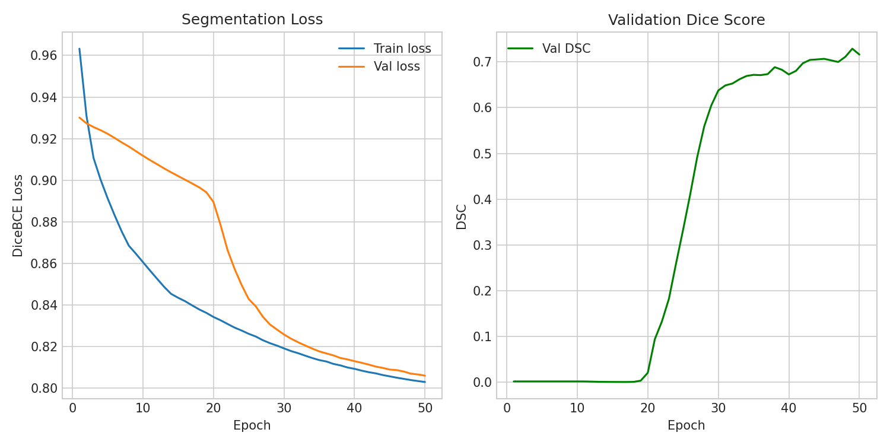

U-Net Training Results¶
Training results across the annotation sessions, from the first 39-mask smoke test through the fully-annotated 220-mask pool. As of 2026-08-10 the label scheme and resolution are decided (multiclass, 256×256 — Run 3), and 01_annotate_pool was 100% annotated (Run 4) — but Run 4 surfaced a real legacy/real-cell domain gap (see Domain Gap).
Plan change (2026-08-19): rather than immediately spending the one-shot, thesis-reportable 02_unet_holdout holdout to measure that gap, the annotation pool is being grown first. 01_annotate_pool now has 428 images (200 legacy + 228 domain-adapt across all 11 usable cells, up from 20 domain frames across just 4), with 208 new domain frames pending annotation. The U-Net is not yet frozen; Run 5, after this re-annotation and retrain, is the next result that matters — see Next Steps.
Run 1 — Baseline (no class imbalance correction)¶
Masks: 39 annotated | Epochs: 50 | Loss: Dice+BCE (α=0.5, no pos_weight)
| Metric | Value |
|---|---|
| DSC | 0.0902 |
| IoU | 0.0473 |
| Precision | 0.0511 |
| Recall | 0.3880 |
| Accuracy | 0.9857 |
Diagnosis: The model learned to predict mostly background. SKBR3 cells occupy roughly 0.18% of each 256×256 frame (~118 pixels out of 65,536), giving a ~550:1 background-to-cell pixel ratio. Without compensation, the BCE loss is dominated by background pixels — achieving near-zero loss simply by ignoring the cell. High accuracy (0.985) is misleading here: it reflects correct background prediction, not cell segmentation. Low precision (0.05) combined with moderate recall (0.39) indicates the model was guessing large regions that partially overlapped the cell.
Run 2 — With class imbalance correction¶
Masks: 30 annotated out of 220 available (13.6%) | Epochs: 50 | Loss: Dice+BCE (α=0.3, pos_weight=100)
DSC 0.72 from just 30 of 220 masks
This result was produced using only 30 hand-drawn masks — 13.6% of the 220-image annotation pool (the pool was briefly misdocumented as 240 elsewhere; see CLAUDE.md — it's 220, 200 legacy + 20 domain-adapt). The remaining 190 frames were not yet annotated at this point. A DSC of 0.72 at this stage was a strong indicator that the annotations were correct and the pipeline was working as expected. The full pool has since been annotated — see Run 4 below.
| Metric | Value |
|---|---|
| DSC | 0.7162 |
| IoU | 0.5581 |
| Precision | 0.5594 |
| Recall | 0.9958 |
| Accuracy | 0.9986 |
Interpretation: Adding pos_weight=100 to the BCE term makes each cell pixel count as 100 background pixels in the loss, forcing the model to prioritise finding the cell. The result is near-perfect recall (the model finds virtually all cell pixels) at the cost of slightly over-segmenting the boundary (precision=0.56). This is the expected trade-off at this sample size — a model that over-segments slightly is preferable to one that misses cells. DSC of 0.72 with only 30 training samples confirms that annotations are correct and consistent.
The loss_alpha=0.3 change (from 0.5) gives Dice loss 70% of the total signal, further counteracting the imbalance.
Training curves (Run 2)¶

Left — Segmentation loss: Both train and val loss decrease steadily across 50 epochs, converging to ~0.80. Val loss tracks train loss closely, indicating no significant overfitting with this sample size.
Right — Validation DSC: DSC stays near zero for the first ~20 epochs while the model learns basic image features, then climbs sharply between epochs 20–30 as it begins detecting the cell shape. DSC reaches ~0.72 by epoch 50. The oscillation in the second half is expected — the validation set is only ~5 images, so a single mis-segmented frame has a large effect on the reported score.
Run 3 — Binary vs. multiclass label scheme × resolution ablation¶
Same 40 annotated frames as Run 2 (up from 30), used to isolate two variables against the binary 256×256 baseline: the annotation label scheme (binary vs. 3-class) and the preprocessed input resolution (128×128 vs. 256×256). Four configs, each holding the other three variables fixed (seed 42, 100 epochs, loss_alpha=0.3):
| Config | Labels | Resolution | Loss weighting | Trapped-cell DSC | Best epoch |
|---|---|---|---|---|---|
configs/binary_experiment_128.yaml |
binary | 128×128 | pos_weight=50 |
0.590 | 92 |
configs/multiclass_experiment.yaml |
3-class | 128×128 | class_weights=[1,3,3] |
0.736 | 99 |
configs/binary_experiment_256.yaml |
binary | 256×256 | pos_weight=50 |
0.763 | 99 |
configs/multiclass_experiment_256.yaml |
3-class | 256×256 | class_weights=[1,3,3] |
0.784 | 73 |
Training curves and per-class metric tables: results/unet_training_curves_v13_binary_128.png through v16_multi_256.png.
Multiclass detail (256×256, configs/multiclass_experiment_256.yaml):
| Class | DSC | IoU | Precision | Recall | Accuracy |
|---|---|---|---|---|---|
| background | 0.996 | 0.993 | 1.000 | 0.993 | 0.993 |
| trapped_cell | 0.784 | 0.645 | 0.757 | 0.813 | 0.999 |
| other/decoy | 0.682 | 0.518 | 0.518 | 0.999 | 0.994 |
| mean | 0.821 | 0.719 | 0.758 | 0.935 | 0.995 |
Interpretation:
- Labeling scheme matters more than resolution alone. At 128×128, adding the decoy-object class raised trapped-cell DSC from 0.590 to 0.736 (+0.146) — a larger jump than switching binary from 128×128 to 256×256 (0.590 → 0.763, +0.173, comparable magnitude) or multiclass from 128×128 to 256×256 (0.736 → 0.784, +0.048, smaller). The best result combines both: multiclass at 256×256.
- Why multiclass helps: giving decoy objects (untrapped cells, debris, lookalike blobs) their own class instead of leaving them as unlabeled background stops the loss from penalizing the model for segmenting them — under the binary scheme, a decoy that visually resembles the trapped cell is background the model is punished for finding, which pushes precision down indiscriminately. Explicitly modeling it as its own class lets the network learn to distinguish "cell-like blob, but not the trapped one" from "the trapped cell," rather than lumping both into one binary decision.
- The decoy class itself is harder (DSC 0.682 vs. 0.784 for trapped_cell) — expected, since decoy objects are a heterogeneous category (any non-trapped cell-like blob) rather than the single consistent target the trapped-cell class represents.
- Multiclass converges faster and can overfit sooner: the 256×256 multiclass run peaked at epoch 73 (val DSC 0.784) then declined to ~0.69 by epoch 100, while the binary run kept improving to epoch 99.
scripts/train_unet.pyreloadsunet_best.ptbefore final evaluation specifically to guard against this — final metrics reflect the peak, not wherever the fixed 100-epoch budget happened to end. - Caveat: these are 40-mask, single-seed runs — not yet a controlled statistical comparison.
Decision (2026-08-10): multiclass @ 256×256 is the frozen label scheme and resolution going forward. binary_experiment_{128,256}.yaml and the 128×128 multiclass config are no longer being actively pursued — kept only as this historical ablation record. This does not change the downstream contract: UNet.predict(..., binary_output=True) collapses the 3-class map to trapped-cell-only binary before MorphologyExtractor and everything past it (commit b6e181b) — multiclass is a training-time-only mechanism for a sharper trapped-cell boundary.
Run 4 — Full 220-mask pool¶
Masks: 220 annotated out of 220 available (100% — annotation pool complete) | Epochs: 100 (best: 45) | Same hyperparameters as Run 3's multiclass_experiment_256.yaml
| Class | DSC | IoU | Precision | Recall |
|---|---|---|---|---|
| background | 0.999 | 0.999 | 1.000 | 0.999 |
| trapped_cell | 0.943 | 0.891 | 0.912 | 0.974 |
| other/decoy | 0.759 | 0.612 | 0.697 | 0.834 |
Training curves: results/unet_training_curves_v19.png. The group-aware split (leave-one-cell-out, confirmed in scripts/train_unet.py's _build_groups/_group_split) means this jump from 0.784 (Run 3, 40 masks) is real added-data signal, not leakage — but see the caveat immediately below before treating 0.943 as the thesis number.
Domain Gap¶
The 0.943 DSC above is measured on a validation split that is 100% legacy-domain (2021 microscope) frames — reproducing the group-aware split with seed 42 shows 0 of the 35 validation frames are domain_-prefixed (real trapped-cell) frames. Breaking the held-out test split out by source tells the real story:
| Test subset (unseen in training) | n | Trapped-cell DSC | Recall |
|---|---|---|---|
| Legacy (2021) | 18 | 0.944 (matches the reported 0.943) | 0.972 |
| Domain-adapt (real trapped cell) | 5 | 0.538 | 0.386 |
High precision (0.895) with collapsed recall means the model under-segments real cells rather than hallucinating — it hasn't learned the live-imaging appearance well. Root cause: only 20/220 (9%) of training frames were real-domain, drawn from just 4 of the 11 usable 03_mask_factory cells, so real frames were outnumbered ~10:1 by legacy frames in the actual train split (15 vs. 147). n=5 is small enough not to be precise, but the direction is unambiguous — 0.943 should not be treated as the real-world number until it's confirmed on the full 02_unet_holdout set (101 real-cell frames).
Mitigations tried¶
1. More real cells in training (run 2026-08-19). celldform/acquisition/organiser.py's domain_adapt video list was extended from 4 cells to all 11 03_mask_factory cells, and --domain-adapt-n was raised 5→20/cell (celldform-organize-dataset --no-clean --domain-adapt-n 20) rather than waiting on the honest 02_unet_holdout DSC to pick a value — the decision was made to grow the pool first and use the legacy-vs-domain DSC breakdown on the internal train/val/test split as the interim feedback signal instead, keeping 02_unet_holdout reserved for the eventual thesis number (see Next Steps). 01_annotate_pool grew from 220 → 428 images (200 legacy + 228 domain-adapt); 208 of the domain frames are new and pending annotation. Frames can safely belong to both 01_annotate_pool (segmentation training) and 03_mask_factory (classifier feature extraction) — same precedent as the existing 4 domain-adapt cells, no contamination, since _domain_adapt() and _extract_group() sample different frame indices from the same video.
2. Oversampling existing domain frames (tried, did not help). Added training.domain_oversample_weight (celldform/config.py, default 1.0) — a WeightedRandomSampler (scripts/train_unet.py) that resamples domain_-prefixed train frames more often per epoch, at zero new-annotation cost. Toggle via a config's training: block or the --domain-oversample-weight <N> CLI flag on celldform-train-unet/scripts/train_unet.py. A/B tested at weight=8.0 (configs/multiclass_experiment_256_domain_oversample.yaml, ~12%→~41% real-domain frames/epoch) against the Run 4 baseline:
| Test subset (n) | Baseline (weight=1) | Oversampled (weight=8) |
|---|---|---|
| Legacy (18) | DSC 0.944 | DSC 0.946 (unchanged) |
| Domain-adapt (5) | DSC 0.538, recall 0.386 | DSC 0.455, recall 0.30 (worse) |
No improvement — resampling only exposes the model to the same 15 unique real images more often; it can't manufacture appearance diversity that isn't there, and likely overfits harder to the 3 real cells already seen (precision rose to 0.947 while recall fell further). Conclusion: mitigation 1 (more real cells) is necessary — resampling existing frames is not a substitute.
Checkpoint-loading bug found and fixed (2026-08-10)¶
UNet.from_checkpoint() (celldform/segmentation/unet.py) did a bare load_state_dict(torch.load(path)), but SegmentationTrainer._save_checkpoint() actually wraps weights in {"epoch", "val_dsc", "model_state_dict", ...} — so celldform-infer and scripts/infer.py would crash on any checkpoint training actually produces. evaluate_unet.py and predict_single_frame.py had each independently worked around it with a manual unwrap; tests/test_segmentation.py didn't catch it because it saves a bare state dict via model.save(), never exercising the wrapped-dict path a real training run produces. Fixed to unwrap model_state_dict when present.
Contamination bug found and fixed (2026-08-19)¶
organise()'s legacy-image copy step (celldform/acquisition/organiser.py) had no exclusion for the 20 frames permanently reserved into 02_unet_holdout/legacy_holdout/ — running celldform-organize-dataset --no-clean to grow the domain-adapt pool (mitigation 1, above) silently recopied all 220 legacy JPGs, holdout included, back into 01_annotate_pool. Caught before annotation touched them (no masks existed yet for those 20 filenames), so no holdout contamination actually reached the model — but a routine --no-clean rerun would eventually have annotated them by accident, since their timestamp-numeric filenames sort before domain_* and scripts/annotate.py resumes on the first unannotated image. Fixed: organise() now reads whatever's in legacy_holdout/ and permanently excludes those filenames from the legacy copy, so this can't recur on future reruns; the 20 duplicated files were removed from the pool.
Loss function¶
The combined Dice + BCE loss used in binary-mode runs (Run 1–2, and binary_experiment_*.yaml):
- BCE penalises each pixel individually — gives stable gradients early in training.
- Dice measures overall mask overlap — keeps the model focused on the cell region rather than pixel counts.
- pos_weight multiplies the BCE penalty on cell pixels to counter the 550:1 background/cell imbalance.
Current defaults in configs/default.yaml:
training:
loss_alpha: 0.3 # Dice carries 70% of the loss signal
loss_pos_weight: 100.0 # increase if recall is low; decrease if precision is low
Multiclass mode (unet.out_channels > 1, e.g. multiclass_experiment_256.yaml) replaces BCE with Cross-Entropy and Dice is computed per-class then averaged:
class_weights (e.g. [1.0, 3.0, 3.0] for background/trapped_cell/other-decoy) plays the same role as pos_weight but is not directly comparable in magnitude — CrossEntropyLoss's weighted-mean reduction renormalises by weight mass, so porting pos_weight=100 in directly collapsed precision to ~0.13 by pushing recall to 1.0 everywhere. [1, 3, 3] was the winner of a small sweep (1,1,1 / 3,3,3 / 5,5,5 / 10,10,10 / 20,20,20, each trained the full 100 epochs) — trapped_cell precision=0.757/recall=0.813, a balanced result rather than recall-saturated.
Expected trajectory (superseded — see Run 4)¶
The table below was the pre-Run-4 projection and undershot: 220 masks reached DSC 0.943 on the (legacy-dominated) validation split, not the ~0.80-0.85 range extrapolated here. Kept for the historical record; the actual number that matters going forward is the domain-gap-corrected one from Domain Gap, pending the honest 02_unet_holdout evaluation.
| Masks | Expected DSC (binary) | Suggested pos_weight |
|---|---|---|
| 30 | ~0.72 | 100 |
| 40 | 0.76 (binary) / 0.78 (multiclass) — see Run 3 | 50 |
| ~80 | ~0.80 | 50–75 |
| 220 (actual) | 0.943 nominal / 0.538 on real cells — see Domain Gap | n/a (multiclass, class_weights=[1,3,3]) |
The thesis-reportable DSC comes from scripts/evaluate_unet.py on the 02_unet_holdout pool — annotated only after training is frozen (currently in progress; see Next Steps). See Workflow Guide.
Data Augmentation and Class-Imbalance Handling¶
Implemented, enabled on the train split only:
- Horizontal flip (50% chance)
- Vertical flip (50% chance)
- Random 90° rotation (0°, 90°, 180°, or 270°)
CellDataset in scripts/train_unet.py applies these via augment=True (train split only; val/test loaders use augment=False). Intensity augmentation is intentionally excluded — CLAHE in Stage 2 already normalises contrast, so brightness jitter would undo that work.
Note this only addresses spatial-orientation invariance, not the legacy/real-domain imbalance — see Domain Gap for domain_oversample_weight, a separate, purpose-built mechanism for that (tried, did not help; kept as an available toggle regardless).
Next Steps¶
- Current priority: annotate the 208 new domain frames in
01_annotate_pool(python scripts/annotate.py --multiclass— resumes on the first unannotated image, so the 220 already-annotated frames are skipped automatically) →scripts/validate_masks.py --multiclass→scripts/preprocess_frames.py --masks→ retrainmulticlass_experiment_256.yaml→ break out the legacy-vs-domain-adapt DSC on the internal validation/test split (same methodology as the Domain Gap table) to check whether the gap closed. 02_unet_holdout(101 real frames, high-cell9 + low-cell6) stays intentionally unannotated until step 1's validation-split domain DSC looks solid — it's the one-shot, thesis-reportable number and shouldn't be spent evaluating an intermediate checkpoint. Once ready:scripts/evaluate_unet.pyfor the honest holdout DSC.- Run the frozen U-Net (
binary_output=True) over03_mask_factory(557 frames) → extract features → train SVM / RF / DT classifiers. - Biomechanics: compute RoD, correlate with laser power, fit Kelvin–Voigt model.